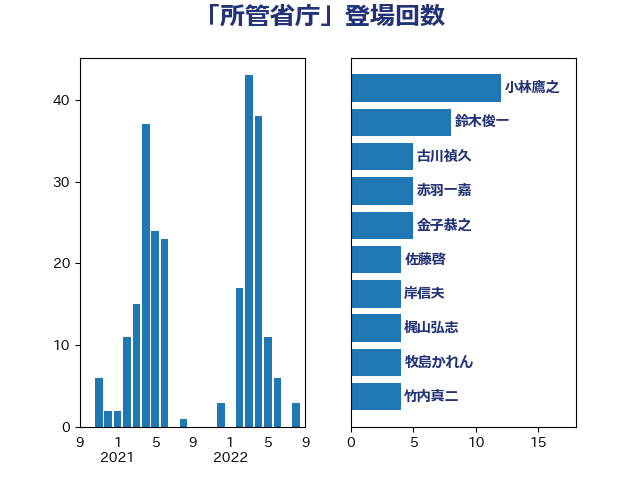

単語「所管省庁」

| 小林鷹之 | 自由民主党 | 12 回 |
| 鈴木俊一 | 自由民主党 | 8 回 |
| 古川禎久 | 自由民主党 | 5 回 |
| 赤羽一嘉 | 公明党 | 5 回 |
| 金子恭之 | 自由民主党 | 5 回 |
| 佐藤啓 | 自由民主党 | 4 回 |
| 岸信夫 | 自由民主党 | 4 回 |
| 梶山弘志 | 自由民主党 | 4 回 |
| 牧島かれん | 自由民主党 | 4 回 |
| 竹内真二 | 公明党 | 4 回 |
| 茂木敏充 | 自由民主党 | 4 回 |
| 野田聖子 | 自由民主党 | 4 回 |
| 井上信治 | 自由民主党 | 3 回 |
| 伊藤孝恵 | 国民民主党 | 3 回 |
| 塩村あやか | 立憲民主党 | 3 回 |
| 平井卓也 | 自由民主党 | 3 回 |
| 池下卓 | 日本維新の会 | 3 回 |
| 中谷一馬 | 立憲民主党 | 2 回 |
| 大野敬太郎 | 自由民主党 | 2 回 |
| 山田賢司 | 自由民主党 | 2 回 |
| 徳永エリ | 立憲民主党 | 2 回 |
| 武田良太 | 自由民主党 | 2 回 |
| 津島淳 | 自由民主党 | 2 回 |
| 田村憲久 | 自由民主党 | 2 回 |
| 田村智子 | 日本共産党 | 2 回 |
| 萩生田光一 | 自由民主党 | 2 回 |
| 里見隆治 | 公明党 | 2 回 |
| 上川陽子 | 自由民主党 | 1 回 |
| 丸川珠代 | 自由民主党 | 1 回 |
| 今枝宗一郎 | 自由民主党 | 1 回 |
| 伊波洋一 | 無所属 | 1 回 |
| 伊藤岳 | 日本共産党 | 1 回 |
| 伊藤渉 | 公明党 | 1 回 |
| 前原誠司 | 国民民主党 | 1 回 |
| 坂本哲志 | 自由民主党 | 1 回 |
| 塩川鉄也 | 日本共産党 | 1 回 |
| 大口善徳 | 公明党 | 1 回 |
| 大西健介 | 立憲民主党 | 1 回 |
| 守島正 | 日本維新の会 | 1 回 |
| 山本博司 | 公明党 | 1 回 |
| 山際大志郎 | 自由民主党 | 1 回 |
| 岸田文雄 | 自由民主党 | 1 回 |
| 市村浩一郎 | 日本維新の会 | 1 回 |
| 平将明 | 自由民主党 | 1 回 |
| 後藤茂之 | 自由民主党 | 1 回 |
| 末松信介 | 自由民主党 | 1 回 |
| 松野博一 | 自由民主党 | 1 回 |
| 柳ヶ瀬裕文 | 日本維新の会 | 1 回 |
| 横山信一 | 公明党 | 1 回 |
| 河野太郎 | 自由民主党 | 1 回 |
| 浅野哲 | 国民民主党 | 1 回 |
| 浜地雅一 | 公明党 | 1 回 |
| 田村まみ | 国民民主党 | 1 回 |
| 石垣のりこ | 立憲民主党 | 1 回 |
| 石川大我 | 立憲民主党 | 1 回 |
| 石川昭政 | 自由民主党 | 1 回 |
| 礒崎哲史 | 国民民主党 | 1 回 |
| 自見はなこ | 自由民主党 | 1 回 |
| 藤井比早之 | 自由民主党 | 1 回 |
| 西村康稔 | 自由民主党 | 1 回 |
| 輿水恵一 | 公明党 | 1 回 |
| 阿部知子 | 立憲民主党 | 1 回 |
| 高木かおり | 日本維新の会 | 1 回 |